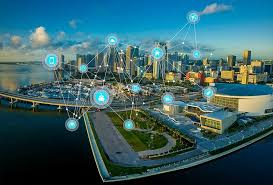

Aujourd’hui, les villes se transforment grâce à des technologies et des concepts innovants qui visent à concilier performance urbaine et durabilité.
On voit émerger les smart cities, où les données sont utilisées pour optimiser la consommation d’énergie, fluidifier la mobilité ou améliorer la gestion des déchets.
Les bâtiments à énergie positive, les réseaux de chaleur renouvelable ou encore l’éclairage public intelligent deviennent de plus en plus courants.

LD’autres initiatives intègrent pleinement la nature dans la ville : agriculture urbaine, façades végétalisées, parcs connectés…
Ces innovations s’accompagnent aussi d’une réflexion sociale : cohabitation intergénérationnelle, démocratie participative, accès universel aux services.
L’objectif est clair : faire de la ville un lieu vivable, inclusif et résilient face aux crises écologiques et climatiques.